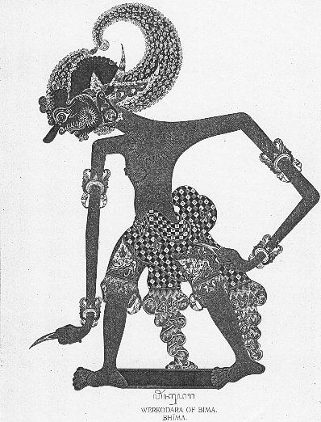
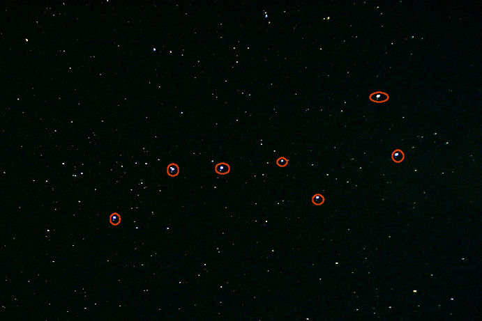
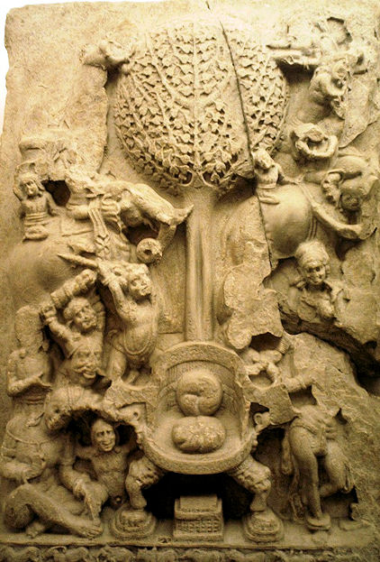
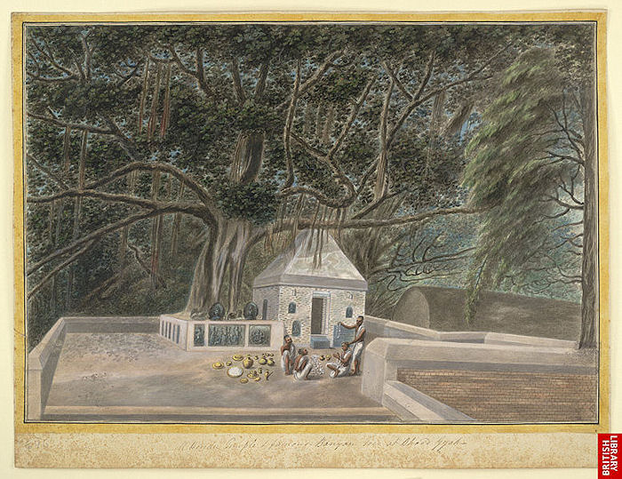
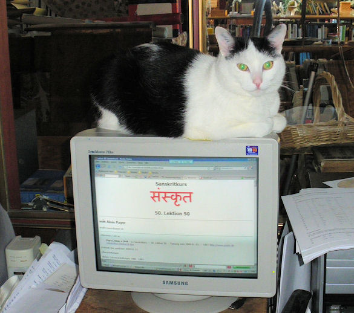

mailto:payer@payer.de
Zitierweise | cite as:
Payer, Alois <1944 - >: Sanskritkurs. -- 52. Lektion 52. -- Fassung vom 2009-01-26. -- URL: http://www.payer.de/sanskritkurs/lektion52.htm
Erstmals hier publiziert: 2009-01-18
Überarbeitungen: 2009-01-26 [Verbesserungen]
Anlass: Lehrveranstaltungen 1980 - 1984
©opyright: Dieser Text steht der Allgemeinheit zur Verfügung. Eine Verwertung in Publikationen, die über übliche Zitate hinausgeht, bedarf der ausdrücklichen Genehmigung des Verfassers
Dieser Text ist Teil der Abteilung Sanskrit von Tüpfli's Global Village Library
Falls Sie die diakritischen Zeichen nicht dargestellt bekommen, installieren Sie eine Schrift mit Diakritika wie z.B. Tahoma.
Die Devanāgarī-Zeichen sind in Unicode kodiert. Sie benötigen also eine Unicode-Devanāgarī-Schrift.
| Vor vokalisch anlautenden Endungen wird ein -n- eingeschoben,
dies ist ein Einfluss der |
| वारि n. "Wasser" |
मधु n. "Honig" |
|
|
एकवचनम् |
||
| प्रथमा, द्वितीया | वारि | मधु |
| तृतीया | वारिणा | मधुना |
| चतुर्थी | वारिणे | मधुने |
| पञ्चमी | वारिणस् | मधुनस् |
| षष्ठी | वारिणस् | मधुनस् |
| सप्तमी | वारिणि | मधुनि |
| आमन्त्रितम् | वारि वारे |
मधु मधो |
|
बहुवचनम् |
||
| प्रथमा, द्वितीया, आमन्त्रितम् | वारीणि | मधूनि |
| तृतीया | वारिभिस् | मधुभिस् |
| चतुर्थी | वारिभ्यस् | मधुभ्यस् |
| पञ्चमी | वारिभ्यस् | मधुभ्यस् |
| षष्ठी | वारीणाम् | मधूनाम् |
| सप्तमी | वारिषु | मधुषु |
| Ein Partizip Parasmaipada der
Vergangenheit wird so gebildet: PPP + -vant / fem.: vatī Deklination wie die Stämme auf -vant bzw. f. देवी |
Beispiele:
कृतवन्त् (kṛta-vant) / कृतवती "einer/eine, der/die getan hat"
भिन्नवन्त् "einer, der gespalten hat"
Das तद्धित-Suffix -maya / f.: -mayī
bildet zu Substantiven Adjektive der Bedeutung
Vor -maya müssen (wie vor -मात्र) auslautende Verschlusslaute der Pausaform durch den ihnen entsprechenden Nasal ersetzt werden. |
Beispiele:
अन्नमय 3 "reich an Speise"
चिन्मय 3 (zu चित् f. "Intellekt") "aus Denken / Verstand bestehend"
वाङ्मय 3 (zu वाच् f. "Sprache") "aus Rede bestehend"
सोममय 3 "aus Soma gemacht, aus Soma bestehend"
Nomina auf -maya werden gelegentlich als
neutrale Substantive gebraucht und bezeichnen dann Überfluss an dem,
was durch das Substantiv, dem -maya angefügt ist, bezeichnet wird.
|
Abb.: अन्नमयम्
विवाहः, Chennai = சென்னை
[Bildquelle: swamysk. --
http://www.flickr.com/photos/swamysk/2317923383/. -- Zugriff am
2009-01-15. --
Creative
Commons Lizenz (Namensnennung, keine kommerzielle Nutzung, keine
Bearbeitung)]
Das तद्धित-Suffix -eya / f.: -eyī tritt u.a.
an Feminina im Sinne von
Dehnstufe (वृद्धि) des ersten Vokals.
|

Abb.: भीमः कौन्तेयः
Wayang-Figur, Java, Indonesien
[Bildquelle. Wikipedia. Public domain]
Das Adverbialsuffix -śas bildet Adverbien
von (hauptsächlich) distributiver Bedeutung aus:
|
Abb.: अनुक्रमेणैकशः
Warteschlage vor Tempel, Trivandrum = Thiruvananthapuram =
തിരുവനന്തപുരം
[Bildquelle: gray_area. --
http://www.flickr.com/photos/83831933@N00/3107232046/. -- Zugriff am
2009-01-15. --
Creative
Commons Lizenz (Namensnennung, keine kommerzielle Nutzung, share alike)]
Vor die Wurzeln
können Substantive und Adjektive als Präverbe gesetzt werden werden, um auszudrücken, dass jemand eine Person oder Sache zu dem macht, oder dass eine Person oder Sache zu dem wird, was durch jenes Nomen bezeichnet wird. Der Auslaut des Nomens wird folgendermaßen behandelt:
|
Abb.: भस्मीकृतं वनम् (भस्मन् n. "Asche")
Brandrodung, Arunachal Pradesh = अरुणाचल प्रदेश
[Bildquelle: parrothanging. --
http://www.flickr.com/photos/biligiri/1857091269/. -- Zugriff am
2009-01-15. --
Creative
Commons Lizenz (Namensnennung, keine kommerzielle Nutzung, keine
Bearbeitung)]
| Um auszudrücken, dass eine Person oder
Sache vollständig zu
dem wird, oder dass jemand etwas oder jemand
ganz und gar zu dem
macht, was durch ein Nomen bezeichnet wird, kann an das Nomen
das Suffix -sāt (das nie -ṣāt wird) angefügt werden und das so gebildete Wort mit den Wurzeln
zu einem Verbalkompositum verbunden werden. |
Beispiele:
अग्निसाद्भवति । अग्निसात्संपद्यते "er wird vollständig zu Feuer"
भस्मसात्करोति "er verwandelt ganz und gar in Asche (भस्मन् n. "Asche"))
Manchmal bedeutet das Suffix -sāt, dass
eine Person oder Sache
das vom Nomen bezeichnet wird |
Beispiel:
राजसाद्भवति "er wird vom König abhängig, er wird Eigentum des Königs"
Nach den Bildungen mit -sāt werden
Wurzeln nicht wie nach
Präverben behandelt, also Absolutiv:
|
Wortwiederholung drückt im Sanskrit aus:
Gelegentlich kann aus solchen Verbindungen ein Kompositum gebildet werden Beispiele:
Zu den sog. आम्रेडित-Komposita, in denen flektierte Wörter wiederholt werden, das zweite aber in vorklassischer Zeit einen Akzent bekam, also ein Kompositum vorliegt, siehe Wackernagel, Altindische Grammatik II,1 S. 142ff. |
Hier nicht behandeltes siehe z.B. bei Kielhorn, Grammatik §201f.
| Die Zahlwörter für
1 bis 19 sind Adjektive. Die Zahlwörter für 1 bis 4 sind für die drei Geschlechter in der Deklination unterschioedlich. Für die Zahlwörter für 5 bis 19 (नवदशन्) gibt es nur eine einzige Deklination für die drei Geschlechter. Für diese Zahladjektive gilt wie für alle Adjektive: es muss in gleichen Fall, Zahl und Geschlecht stehen wie das zugehörige Nomen und umgekehrt (d.h. für 1 Singular, für 2 Dual, für die übrigen Plural). |
Zahladjektive:
1 एक 3 (Deklination wie सर्व, im Plural: "einige")
2 द्वि 3
3 त्रि 3
4 चतुर् 3
5 पञ्चन् 3
6 षष् 3
7 सप्तन् 3
8 अष्टन् 3
9 नवन् 3
10 दशन् 3
Die Deklination folgt an gegebener Stelle in den Wortlisten.
Die weiteren Zahladverbien bis 19 siehe z.B. bei Kielhorn, Grammatik §201.
| Die Zahlwörter für
19 (एकोनविंशति "eins weniger als 20")
bis 99 sind feminine
Substantive und werden
wie मति f. bzw. Wurzelnomina auf -t (z.B. त्रिंशत् f.)
dekliniert. Beispiele:
Die Zahlwörter für Zahlen ab 100 sind neutrale Substantive. Sie werden wie फलम् dekliniert. Beispiele:
Die einzelnen Zahlsubstantive siehe z.B. bei Kielhorn, Grammatik §201. |
Aus dem Unterschied zwischen
Verbaladjektiven und Verbalsubstantiven für Kadinalzahlen ergibt
sich folgende Konsequenz für die Syntax:
|
Siehe z.B. bei Kielhorn, Grammatik §201f.
a) "-mal":
einmal: सकृत्
zweimal: द्विस्
dreimal: त्रिस्
viermal: चतुस्
fünfmal usw. wird mit dem Suffix -कृत्वस् gebildet: पञ्चकृत्वस्
b) "-fach": wird mit dem Suffix -धा ausgedrückt
einfach: एकधा
zweifach: द्विधा । द्वेधा
usw.
c) "je ...", "zu ...": wird mit dem Suffix -शस् ausgedrückt (siehe oben!)
द्विशस् "zu zweien, je zwei"
"-fältig":
zweifältig, aus zweien bestehend
dreifältig, aus drei Teilen bestehendab 4 wird "-fältig" durch das Suffix -तय (f.: -तयी) ausgedrückt: चतुष्टय m.n. चतुष्टयी f. "vierfältig"
Weitere Bildungen entnehme man den Wörterbüchern oder Grammatiken.
| बहुव्रीहि dieser Art werden ganz regelmäßig gebildet. |
Beispiel:
चतुर्मुख m. "einer, der vier Gesichter hat" = चत्वारि मुखानि यस्य सः (ein Beiname Brahmās)
Abb.: चतुर्मुखः
[Bildquelle: Wikipedia. Public domain]
| तत्पुरुष mit einer Kardinalzahl im
Vorderglied dürfen nicht
beliebig gebildet werden: Regel 1: Wörter, die eine Himmelsrichtung bezeichnen (wie पूर्व 3 "östlich", उत्तर 3 "nördlich"), und Wörter für Kardinalzahlen dürfen mit anderen Wörtern nur dann ein कर्मधारय-Kompositum bilden, wenn das Kompositum als Eigenname gebraucht wird. |
Daher darf z.B. aus उत्तरा वृक्षाः "nördliche Bäume" oder पञ्च ब्राह्मणः kein Tatpuruṣa gebildet werden. Aus सप्तन् und ऋषि kann aber der Tatpuruṣa सप्तर्षि m. "die sieben Ṛṣis" gebildet werden, wenn dies als Name für das Sternbild des Großen Bären (Ursa maior) steht.

Abb.: सप्तर्षयः
Das Siebengestirn = die sieben
hellsten Sterne des Großen Bären (Ursa maior)
[Bildquelle: Wikipedia, GNU FDLicense]
Regel 2: Abweichend von Regel 1 kann ein
Wort, das eine Himmelrichtung oder eine Kardinalzahl bezeichnet mit
einem anderen Nomen ein Tatpuruṣa bilden, wenn
|
Abb.: षण्मातुरः कार्त्तिकेय:
Jalakandapuram = ஜலகண்டபுரம்
[Bildquelle: Wikipedia. Public domain]
| Eine Bezeichnung für eine Kardinalzahl
(aber nicht für eine Himmelsrichtung) kann als Vorderglied mit einem
anderen Nomen auch dann ein Tatpuruṣa bilden, wenn das so gebildete
Kompositum das Aggregat mehrerer Dinge bezeichnet, d.h. zwei oder
mehrere Dinge zu einer Einheit zusammenfasst. Tatpuruṣa, die nach dieser Regel gebildet werden heißen Dvigu (द्विगु). Dvigu-Komposita, die eine Einheit bezeichnen, sind gewöhnlich Neutra. Endet das zweite Glied auf -a, so kann das Femininsuffix -ī antreten. Endet das zweite Glied auf fem. -ā, so tritt an dessen Stelle entweder Neutrum -a oder Feminin -ī. Endet das zweite Glied auf -an, so wird dafür -a oder -ī substituiert. |
Beispiele:
त्रि + भुवनव् » त्रिभुवन n. "das Aggregat der drei Welten, die drei Welten als Einheit, die Dreiwelt (Himmel-Erde-Unterwelt)
त्रिलोक n. । त्रिलोकी n. "Dreiwelt"
|
Dvigu-Komposita, denen kein Taddhitasuffix angefügt ist, die aber die Bedeutung haben, die durch ein Taddhita-Suffix bezeichnet wird, richten wie Bahuvrīhis ihr Geschlecht nach dem Nomen, welches sie näher bestimmen (es sind in Wirklichkeit wohl Bahuvrīhi) |
Beispiel:
पञ्चगु 3: "für fünf Kühe erhandelt"
अखिल 3: lückenlos, ganz
निखिल 3: vollständig, ganz
von:
खिल m.: Brachfeld, Ödland
Abb.: खिलः
Tambhol, Akole, Ahmednagar = अहमदनगर
[Bildquelle: Dan Tunstall / World Resources Institute Staff. --
http://www.flickr.com/photos/wricontest/291696431/. -- Zugriff am
2009-01-16. --
Creative Commons Lizenz (Namensnennung)]
अन्तर् Adv.: innen, im Innern ; Postposition mit Gen. Lok. (षष्टी, सप्तमी): innerhalb, inmitten ; Postposition mit Gen. Abl. (षष्ठी, पञ्चमी): aus ... heraus
अन्योन्य 3: gegenseitig, einander
इ + वि + परि 2P विपर्येति : fehlschlagen
PPP विपरीत 3: verkehrt, falsch
त्रि 3: drei
Maskulinum
पुंस्Neutrum
नपुंसकम्Femininum
स्त्रीत्रयस् त्रीणि तिस्रस् 1. Nominativ
१. प्रथमा2. Akkusativ
२. द्वितीयात्रीन् त्रीणि तिस्रस् 3. Instrumentalis
३. तृतीयात्रिभिस् तिसृभिस् 4. Dativ
४. चतुर्थीत्रिभ्यस् तिसृभ्यस् 5. Ablativ
५. पञ्चमीत्रिभ्यस् तिसृभ्यस् 6. Genetiv
६. षष्ठीत्रयाणाम् तिसृणाम् 7. Lokativ
७. सप्तमीत्रिषु तिसृषु
निस् Postposition und Präfix bei Nomina und Verben: hinaus, hinweg, heraus, hervor, aus, weg, ohne - von
पीड् 10P पीडयति : drücken, quälen ; bedrängen, belagern, plagen
Abb.: पीडिताः
Hyderabad = హైదరాబాద్
[Bildquelle: David A G Wilson. --
http://www.flickr.com/photos/dawilson/2912554387/. -- Zugriff am 2009-01-16.
-- Creative
Commons Lizenz (Namensnennung, keine kommerzielle Nutzung, keine
Bearbeitung)]
पर 3: (Deklination wie सर्व) fernstehend, fremd, höher als (पञ्चम्या), äußerster, höchster ; anderer, fremder, feindlich ; m.: Fremder
davon:
परम् Adv.: in hohem Grade, darauf, später, aber, jedoch
प्रति Postposition (द्वितीयया): zu - hin, nach, in Bezug auf, gegenüber
प्रधान 3: hauptsächlicher, bester ; n.: Wichtigstes
Abb.: प्रधानः
मुंबई
[Bildquelle: saibotregeel. --
http://www.flickr.com/photos/saibotregeel/330885607/. -- Zugriff am
2009-01-16. --
Creative Commons Lizenz (Namensnennung, keine Bearbeitung)]
लौल्य n.: Gier, Lüsternheit
वर्ग m.: Abschnitt, Abteilung, Schar
त्रिवर्ग m.: Dreiergruppe (z.B. धर्मः, अर्थः, कामः ; oder: सत्त्वम्, रजस्, तमस् ; oder: ब्राह्मणाः, क्षत्रियाः, वैश्याः)
वश् 2P वस्टि, उशन्ति, Imperat. 2.sg.: उड्ढि : wollen, gebieten, verlangen nach
Perf Va उवाश, ऊशुर्
Fut. वशिष्यति
Pass. उष्यते
Kaus. वाशयति
PPP उशित
Inf. वशितुम्
Absol. -वश्य
वा 2P वाति : wehen, blasen
Perf IV ववौ
Fut. वास्यति
Pass. वायते
Kaus. वापयति
PPP वान । वात
Inf. वातुम्davon:
वात m.: Wind
वृज् 7P वृणक्ति 1P वर्जति : wenden, drehen ; abwehren, ausschließen
Perf. II ववर्ज, ववृजुर्
Fut. वर्जिष्यति
Pass. वृज्यते
Kaus. वर्जयति : beseitigen
Kaus. PPP वर्जित : einer Sache verlustig, frei von
PPP वृक्त
Inf. वर्जितुम्
व्यवहार m.: Treiben, Wandel, Umgang, Verkehr, Geschäft, Handel, (Gerichts-)Prozess
शील n.: Brauch, Gewohnheit, Natur, Charakter, gute Gewohnheit = Moral
सूर्य m.: Sonne
सेव् 1Ā सेवते : jemandem (द्वितीया) dienen, aufwarten, ehren, lieben
Perf I सिषेवे
Fut. सेविष्यते
Pass. सेव्यते
Kaus. सेवयति
PPP सेवित
Inf. सेवितुम्
Absol. -सेव्यdavon:
सेवा f.: Dienst, Aufwartung
धीर 3: fest, standhaft, kontinuierlich, beharrlich
शम् शाम्यति
शशाम, शेमुर्
शमिष्यति
शम्यते
शमयति
शान्त
शमित्वा । शान्त्वा
कोविद 3: erfahren in (षष्ठ्या सप्तम्या वा)
याम m.: Nachtwache (jeweils drei Stunden)
परंपरा f.: ununterbrochene Reihe
अमुत्र Adv.: dort, dorthin
च्यु 1Ā च्यवते : sich rühren, sich fortbewegen, herabfallen
Perf. IIIa चुच्युवे
Fut. च्योष्यते
Pass. च्यूयते
Kaus. च्यावयति
PPP च्युत
भू + अनु 1P अनुभवति : erkennen, empfinden, wahrnehmen, erfahren
चक्र n.: Rad
Abb.: चक्रम्
Konark = कोनार्क
[Bildquelle: Gaurab Arka. --
http://www.flickr.com/photos/gaurabarka/2758427709/. -- Zugriff am
2009-01-16. --
Creative
Commons Lizenz (Namensnennung, keine kommerzielle Nutzung, keine
Bearbeitung)]
कदली f.: Bananenbaum (Musa sp.)
Abb.: कदली
Hampi = ಹಂಪೆ
[Bildquelle: oliver hiltbrunner. --
http://www.flickr.com/photos/oliverhiltbrunner/757794766/. -- Zugriff am
2009-01-15. --
Creative
Commons Lizenz (Namensnennung, keine kommerzielle Nutzung, share alike)]
सार m.n.: Kern, Mark, Essenz, Substanz
दिव्य 3: himmlisch, göttlich
वर 3: bester
आदर्श m.: Spiegel
मल m.n.: Schmutz, Makel
Abb.: मलम्
मुंबई
[Bildquelle: James Cridland. --
http://www.flickr.com/photos/jamescridland/187997905/. -- Zugriff am
2009-01-16. --
Creative Commons Lizenz (Namensnennung)]
त्रिपिष्टप n.: Indras Himmel
मार m.: das personifizierte Böse, die personifizierte Verführung / Manipulation, Teufel

Abb.: Māras Angriff auf Buddha
Amaravati = అమరావతి, 2. Jhdt. n. Chr.
[Bildquelle. Wikipedia. GNU FDLicense]
विजिज्ञासु 3: jemand, der völlig erkennen will
त्रै 1Ā त्रायते : beschützen, retten
Perf. IV तत्रे
Fut. त्रास्यते
Pass. त्रायते
Kaus. त्रापयति
PPP त्राण । त्रात
Inf. त्रातुम्
१. मनुस्मृति ४, १५९ - १६१
यद्यत्परवशं कर्म
ततद्यत्नेन वर्जयेत् ।
यद्यदात्मवशं तु स्यात्
ततत्सेवेत यत्नतः ॥१५९॥सर्वं परवशं दुःखं
सर्वमात्मवशं सुखम् ।
एतद्विद्यात्समासेन
लक्षणं सुखदुःखयोः ॥१६०॥यत्कर्म कुर्वतो ऽस्य स्यात्
परितोषो ऽन्तरात्मनः ।
तत्प्रयत्नेन कुर्वीत
विपरीतं तु वर्जयेत् ॥१६१॥Erklärung: सुखदुःखयोः Gen.Lok.Dual.m.f.n. (Dualdvandva)
२. मनुस्मृति २, ६ Über die Quellen des धर्म
वेदो ऽखिलो धर्ममूलम्
स्मृतिशीले च तद्विदाम् ।
आचआरश्चैव साधूनाम्
आत्मनस्तुष्टिरेव च ॥६॥Erklärung: स्मृतिशीले Nom.Akk.Dual.n. (Dualdvandva)
३. कौटिलीयार्थशास्त्र १, ७, २ - ७ Über अर्थ, काम, धर्म im Leben des Fürsten
एवं वश्येन्द्रियः परस्त्रीद्रव्यहिंसाश्च वर्जयेत्, स्वप्नं लौल्यमनृतम्दुद्धतवेषत्वमनर्थ्यसंयोगमधर्मसंयुक्तमनर्थसंयुक्तं च व्यवहारम् ।२। धर्मार्थाविरोधेन कामं सेवेत, न निःसुखः स्यात् ।३। समं वा त्रिवर्गमन्योन्यानुबद्धम् ।४। एको ह्यत्यासेवितो धर्मार्थकामानामात्मानमितरौ च पीदयति ।५। अर्थ एव प्रधान इति कौटिल्यः ।६। अर्थमूलौ हि धर्मकामाविति ।७।
Erklärungen:
इतरौ Nom.Akk.Dual.m zu इतर 3 "anderer"
अर्थमूलौ, धर्मकामौ Nom.Akk.Dual.m (धर्मकामौ ist Dualdvandva)
४. अश्वघोष (2. Jhdt. n. Chr.): बुद्धचरित ४ Buddhas erlösende Erkenntnis

Abb.: अश्वत्थो महाबोधिवृक्षः
Ficus religiosa L.
बोधगया, ca. 1810
[Bildquelle: Wikipedia. Public domain]
ततो मारबलं जित्वा
धैर्येण च शमेन च ।
परमार्थं विजिज्ञासुः
स दद्ध्यौ ध्यानकोविदः ॥१॥सर्वेषु ध्यानविधिषु
प्राप्य चैश्वर्यमुत्तमम् ।
सस्मार प्रथमे याम
पूर्वजन्मपरंपराम् ॥२॥अमुत्राहमयं नाम
च्युतस्तस्मादिहागतः ।
इति जन्मसहस्राणि
सस्मारानुभवन्निव ॥३॥स्मृत्वा जन्म च मृत्युं च
तासु तासूपपत्तिषु ।
ततः सत्त्वेषु कारुण्यम्
चकार करुणात्मकः ॥४॥कृत्वेह स्वजनोत्सर्गम्
पुनरन्यत्र च कृत्वा ।
अत्राणः खलु लोको ऽयम्
परिभ्रमति चक्रवत् ॥५॥इत्येवं स्मरतस्तस्य
बभूव नियतात्मनः ।
कदलीगर्भनिःसारः
संसार इति निश्चयः ॥६॥द्वितीये त्वागते यामे
सो ऽद्वितीयपराक्रमः ।
दिव्यं लेभे परं चक्षुः
सर्वचक्षुष्मतां वरः ॥७॥ततस्तेन स दिव्येन
परिशुद्धेन चक्षुषा ।
ददर्श निखिलं लोकम्
आदर्श इव निर्मले ॥८॥सत्त्वानां पश्यतस्तस्य
निकृष्टोत्कृष्तकर्मणाम् ।
प्रच्युतिं चोपपत्तिं च
ववृधे करुणात्मता ॥९॥इमे दुष्कृतकर्माणः
प्राणिनो यान्ति दुर्गतिम् ।
इमे ऽन्ये शुभकर्माणः
प्रतिष्ठन्ते त्रिविष्टपे ॥१०॥
Mit Lektion 52 ist das erste Semester (13 Wochen á 4 Unterrichtsstunden) des Sanskritkurses beendet.
Während der Semesterferien sollten folgende Aufgaben erfüllt werden:

Abb.: श्रीगुम्पिः , मम मन्त्री
(Bild: Payer)
Zu Lektion 53